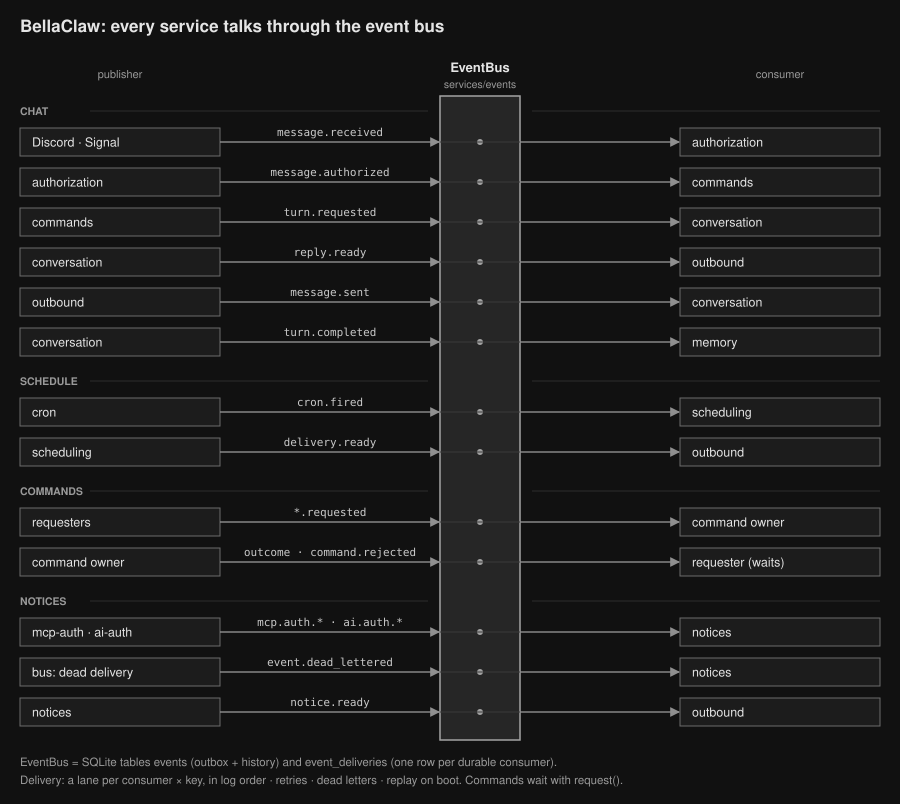

BellaClaw · apps/assistant
Event architecture
Services talk through one durable event log. A service writes only its own tables and reaches another service with a fact it publishes or a command it requests. Rules for changing it: .agents/skills/architecture/SKILL.md.
1 · Services and the bus
Services around the bus: who publishes, who consumes

Every message goes through the bus and is a row in the event log. No service calls another to change its state; reads from the allow-list (settings and authorization caches, read tools, drivers) are direct calls and are not drawn. Caches, Signal typing and MCP session closing are live subscriptions: in memory, never replayed.
2 · Inside the bus
How one event is stored, ordered and delivered
3 · Guarantees
| Effect | After a crash |
|---|---|
| Database rows | Committed with the ack: exactly once. |
| Follow-up events | Derived dedupe key: published once. |
| Model turn | turn.started found on replay → one "I was restarted" reply, no second model run. |
| Scheduled task | cron.task.started found → the job's fallback text. |
| Chat send | Sent, then message.sent commits; a crash in between may send twice. |
| Calendar create | Event id derived from the command id: a retry returns the same event. |
| Inbound message | Dedupe key per platform message: a redelivery is ignored. |
4 · Where it is enforced
apps/assistant/src/services/events/boundaries.test.ts: cross-service imports are type-only, infrastructure, or on the allow-list; waits form an acyclic graph; every command has exactly one durable consumer.apps/assistant/src/index.test.tswithsrc/fixtures/crash.ts: the app is killed at named points and booted again.apps/assistant/scripts/redrive-events.ts: lists dead deliveries and puts chosen ones back to pending.